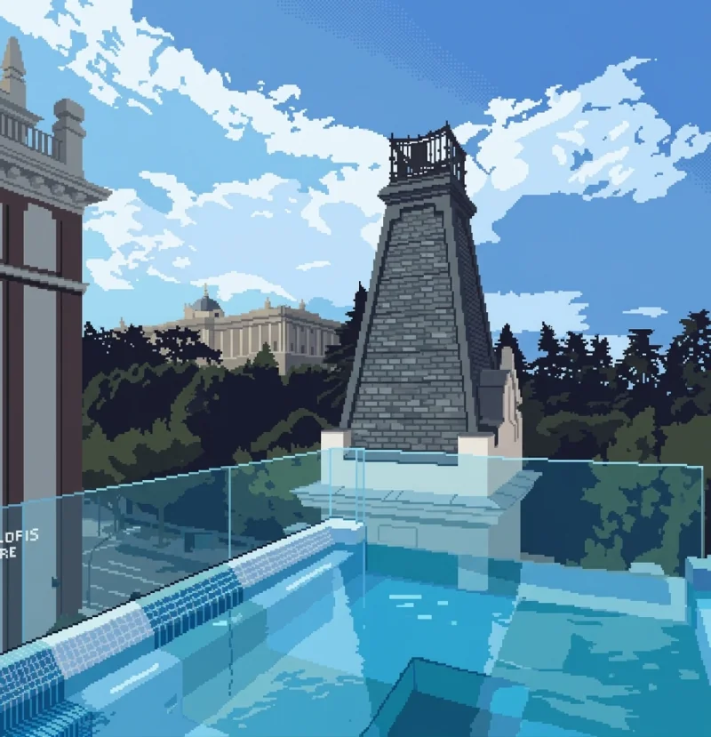
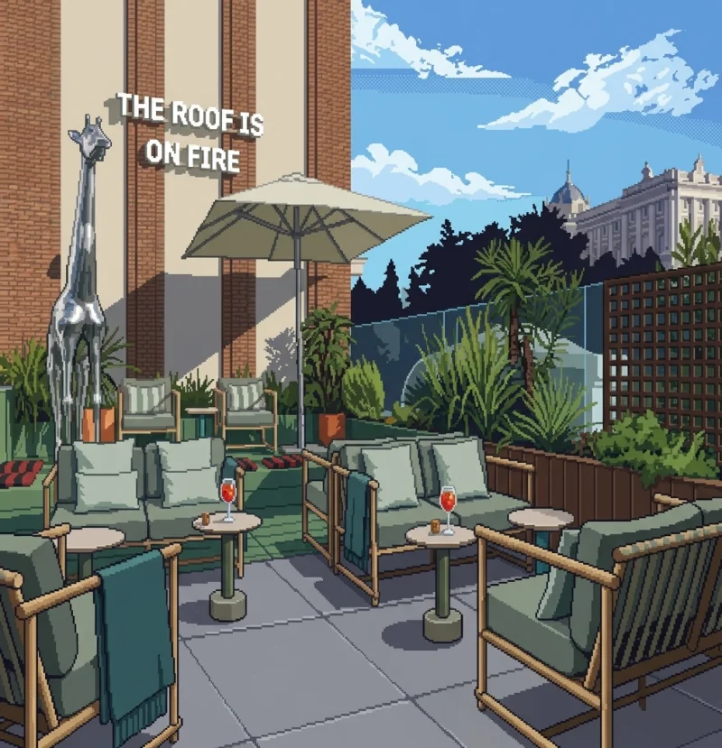
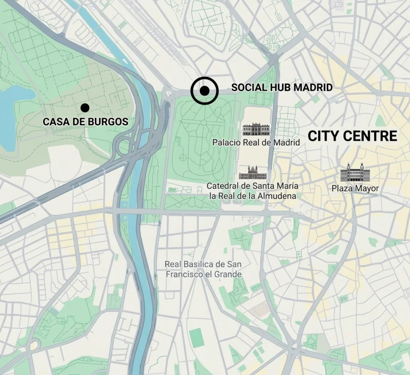
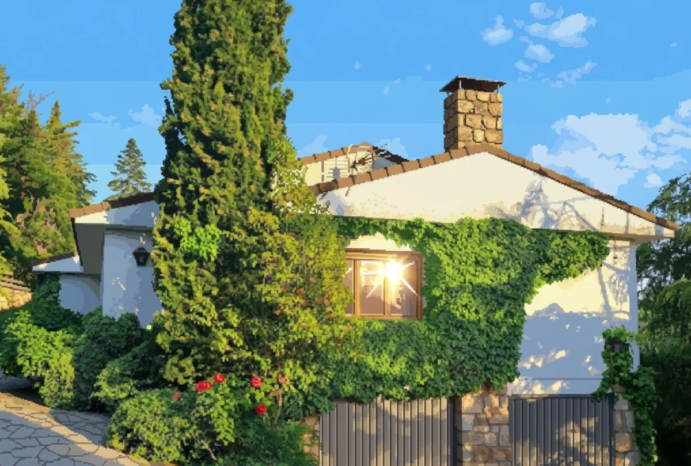
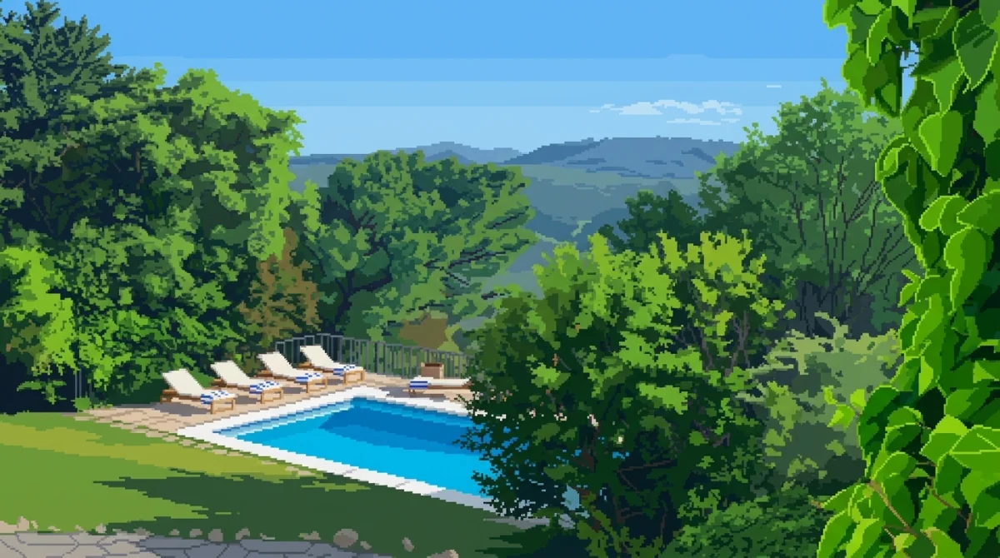
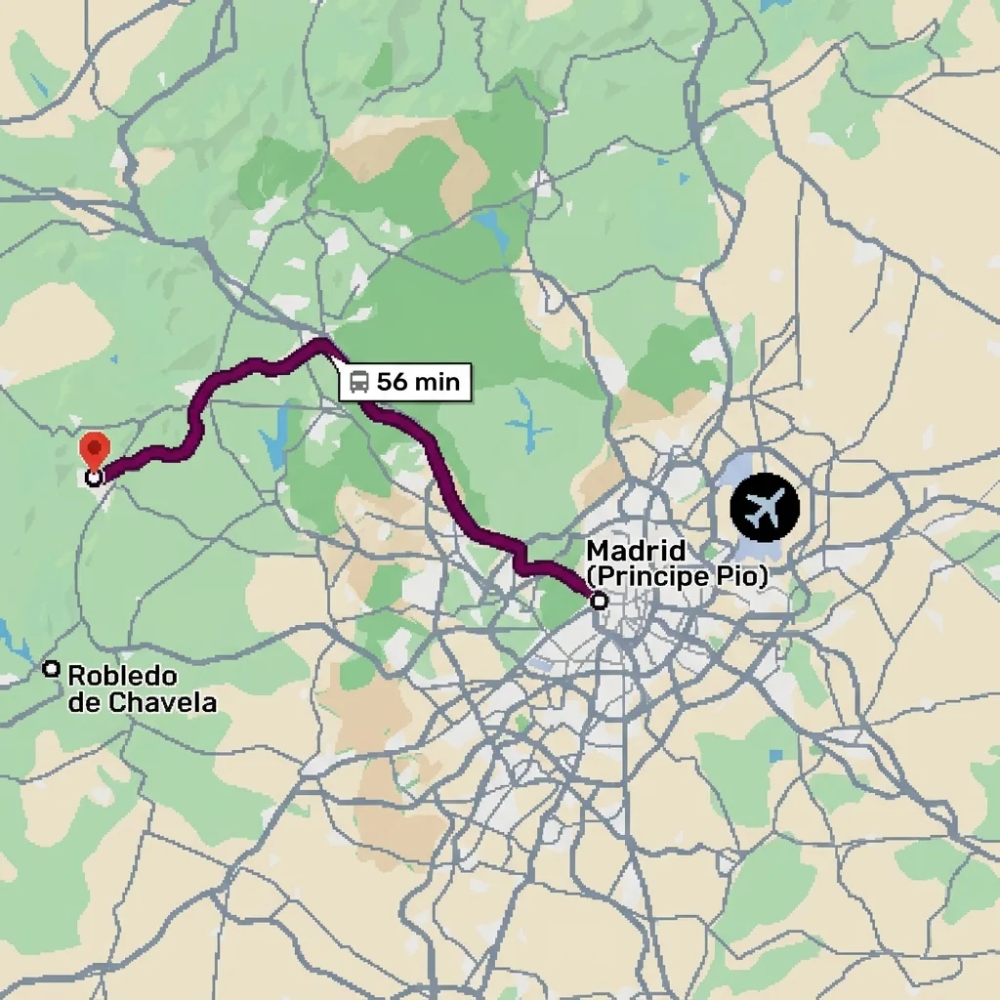

THE
GETAWAY
13 – 18 SEPTEMBER 2027
ROBLEDO DE CHAVELA, SIERRA DE MADRID
A HOUSE IN THE MOUNTAINS NEXT TO MADRID,
THE WEEK BEFORE THE WEDDING.
ALL ON US :P
- THE PLANCHILL, AMAZING FOOD, BEERS BY THE POOL, SUNSET BBQ, OPTIONAL HIKES
- HOW TO GET THEREDIRECT FROM PRINCIPE PIO, 55 MIN
- TOWNROBLEDO DE CHAVELA
MORE DETAILS COMING EVENTUALLY…
PRO TIP
WE’LL BE STAYING AT THE SOCIAL HUB FROM THE 18TH TO THE 20TH OF SEPTEMBER, THE DAY BEFORE AND THE DAY AFTER THE WEDDING.
IT’S PERFECTLY LOCATED BETWEEN THE WEDDING VENUE AND THE CITY CENTRE, RIGHT NEXT TO THE ROYAL PALACE (SAY HI TO THE KING FROM US). AND NO, WE DON’T GET ANY COMMISSION.
▸ THE SOCIAL HUB MADRID




